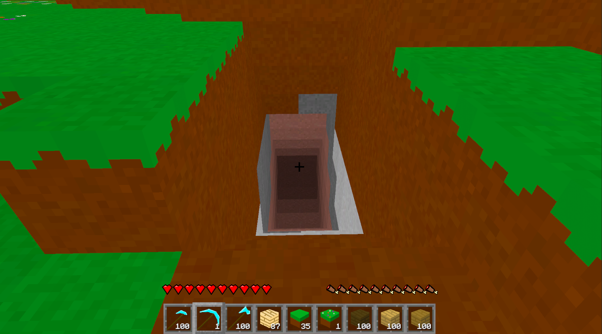
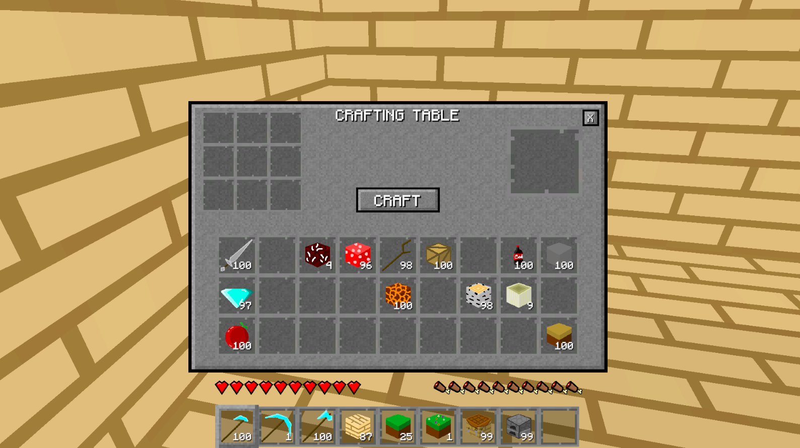
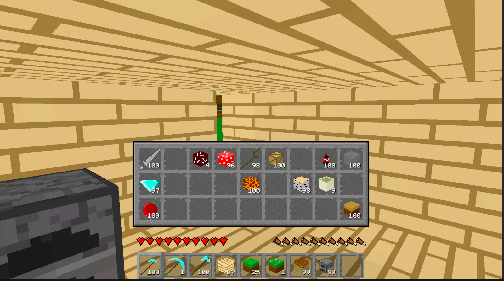
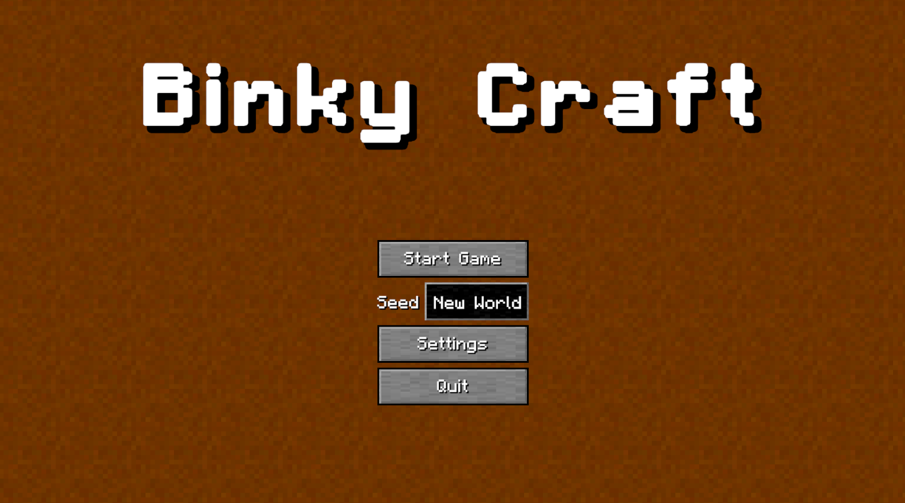
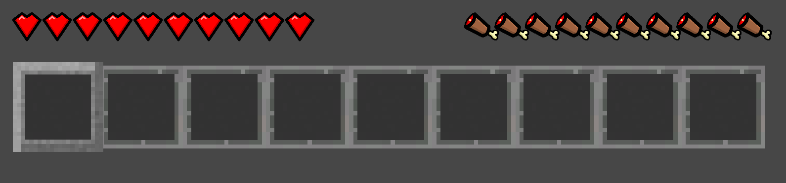
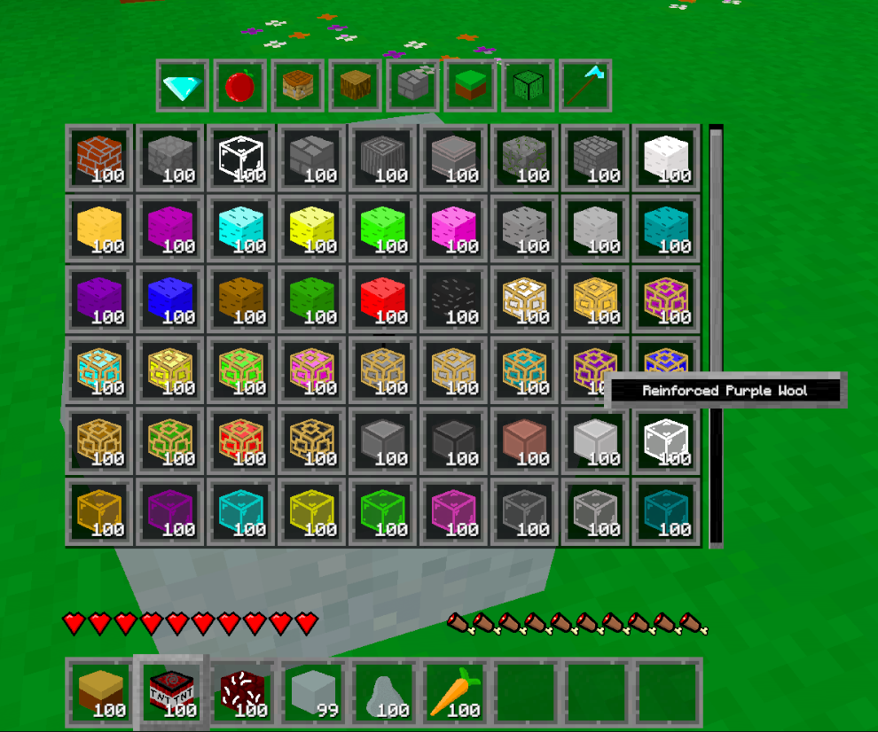
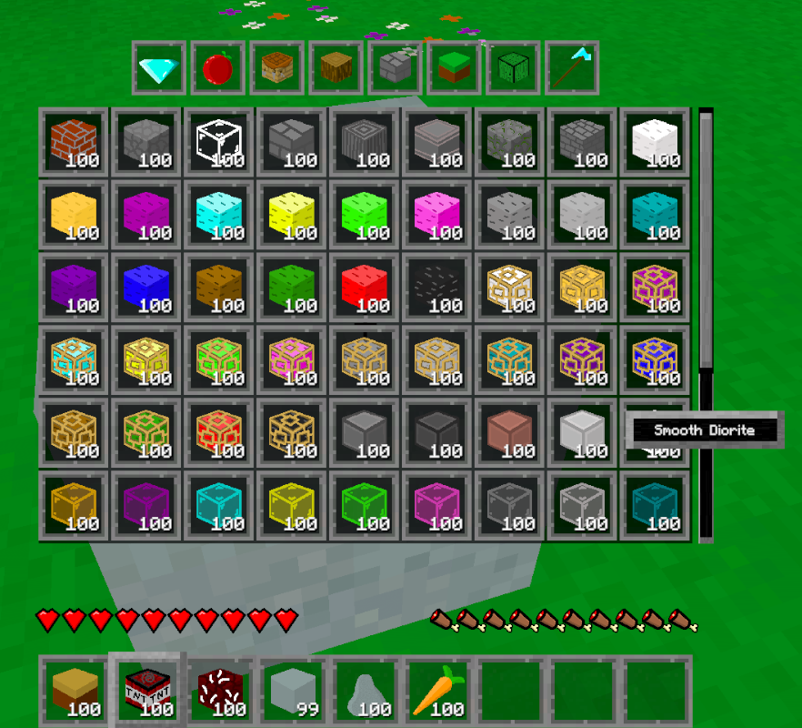
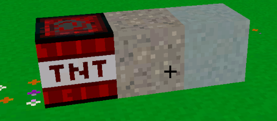

Devlog Eight Overview
I am getting real close to being able to have other people try out the game. Is it anywhere near complete? Not even close. But the player can now mine resources, build a house, and save all their progress. That's essentially a game right there.
I just really want to have people try out the game and let me know some of the biggest issues with it, and what they may want to see in the game in the future. Like, do they want a better character controller (I kinda do), or is directional blocks a huge priority?
Main Features
The biggest feature of this update is the saving as you can imagine. The saving comes in three parts: the world/ chunks, the player, and the inventory/ toolbar.
For saving the world/ chunks, a lot had to be done. I'm not going to explain all the code. It's weird and a little not great. But it works! But I will give you a simple overview of how it was done. Each chunk is made up of blocks, which are really just data points in this context, pertaining to which block is supposed to be where. So when I save the game, I save what block id is at each block point in a chunk. Most of them are air, dirt, or stone by the way. Each chunk will get saved as a seperate file and get loaded when you start the game. When rebuilding the chunk, it will look for all the data points and set which block is supposed to be where.

The player position was really easy to save. It's just a Vector3 (because at least for now, I'm not going to worry about rotation), which is just three numbers. I had to save three numbers. The challenge was real with this one! Not really.
Finally the inventory and toolbar. This one also wasn't too difficult thankfully. I only had to save two numbers for each slot in the toolbar and inventory: the item id and the amount in that stack. Then when I loaded the game, I told each slot "hey, item id goes here with this amount of it, so load the info for that item".
So now if the player mines a deep tunnel into the earth, looking for resources, that progress will actually save. And all the resouces that got put into the inventory as well. And all this saving is done through custom binary files, which Unity has convienent methods for, so the player can't manually find the save files and give themselves a bunch of diamonds or something.
Now, let's talk about the other feature of this update: the UI. I am not what you would call capable of good UI. At all. But I did try, so don't judge too much. I did the UI for the main menu, crafting table, the toolbar hearts and hunger, and all the backgrounds and slots. Basically all the art in the game is now fully mine, and I'm happy about that. Though it still looks extremely like Minecraft. Kinda just looks like a texture pack. I'm fine with that. Probably better I stay close to something not terrible.




Also I say I did the main menu, but I really just mean that the stuff there is useable and my own stuff. I'm trying to think of a way to make the main menu original and not terrible. I figure at least this part of the game should not be such a copy/ paste of Minecraft. So for now it's simple.
Another aspect of the UI I worked on is the item name display within the inventory. It'll now scale with the name of the item. This will work much more nicely than having a large box for names of any size.


Any future UI work I do in the future, will very likely look like what I've already done. Such as the furnace UI when I finally add that in. It'll be an almost clone of the crafting table UI, but with a few things slightly changed.
Blocks
I actually did only three blocks for this update. I just spent so much time working on the saving, and I really want to get this devlog out. To make up for it (to my own satisfaction), I think I'm going to release a bunch of blocks and items in the next devlog. Also the TNT looks a little odd, and I'm not sure why. I've noticed this with a few blocks where the compression or somethinig isn't being loaded nicely. Something to look into in the future I guess.

Conclusion
A lot of this devlog was backend type stuff. Not the type of progress that's easy to show off. You kinda just have to believe me that it's all working the way I say it is. But it's all very important progress that had to be done. And since I had the thought of how to do it recently, I did it.
So now all the art in the game is fully mine, and now the player can mine, build, craft, and save. Oh! You may have noticed there is no 2x2 crafting system in the player inventory. I'm just not sure I want one there. I know Minecraft has one and it's very useful, but I might take my game in a slightly different direction. We'll see. You may have noticed that there is nothing in the game to really show off player info other than hearts and hunger. No level or experience, and nothing to see what the player could have equipped like armour. That's because I'm saving that type of stuff for a 'player experience' kind of update. So look forward to that when it does finally release. At that point, this game will really start feeling like a game.